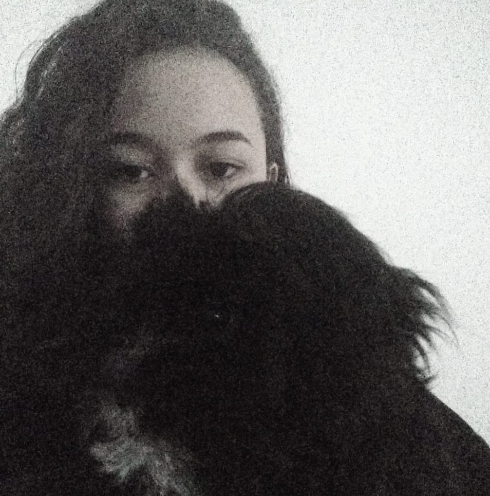

Primeiramente, queria dizer que uma enorme característica minha é que eu não tenho noção nenhuma de design. Eu até tentei fazer uma coisa mais elaborada, mas ficou feião. Portanto, aqui estamos, com uma imagem de fundo de aguinha, porque água é um bagulho muito bonito.
Então vamos ao que não interessa: minha vida!
Meu nome é, vide título, Tainá. Eu tenho 15 anos e moro no famigerado Barreiro, em BH.
Essa é uma foto minha com o meu doguinho, que sempre fica praticamente invisível em todas as fotos. Eu raramente tiro fotos e eu gosto muito de cachorros, mas também tenho um leve medo devido a um trauma de infância.
Minhas matérias preferidas são super relacionadas: Matemática e História. Eu definitivamente
não gosto de Português. Atualmente (sou muito indecisa), eu penso em fazer uma graduação
em Economia, pois é uma área que consegue estranhamente juntar um pouco de exatas com as ciências
humanas.
Dependendo da situação, eu sou bem tímida. Eu posso demorar a conversar com as pessoas, mas, se eu pegar intimidade, eu falo pra caramba.
Tenho dificuldade em organização de tempo e sou uma procrastinadora nata. Meu tempo de procrastinação é praticamente todo dedicado ao Twitter e aos vídeos de indianos construindo casas de terra com um toquinho no meio da floresta.
No meu tempo realmente livre, eu costumo:
Chegamos ao fim do meu sitezinho. Foi só para falar um pouquinho mais sobre mim e, se você leu até aqui, obrigada! Durma com os anjinhos.